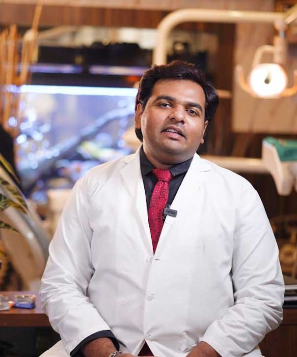
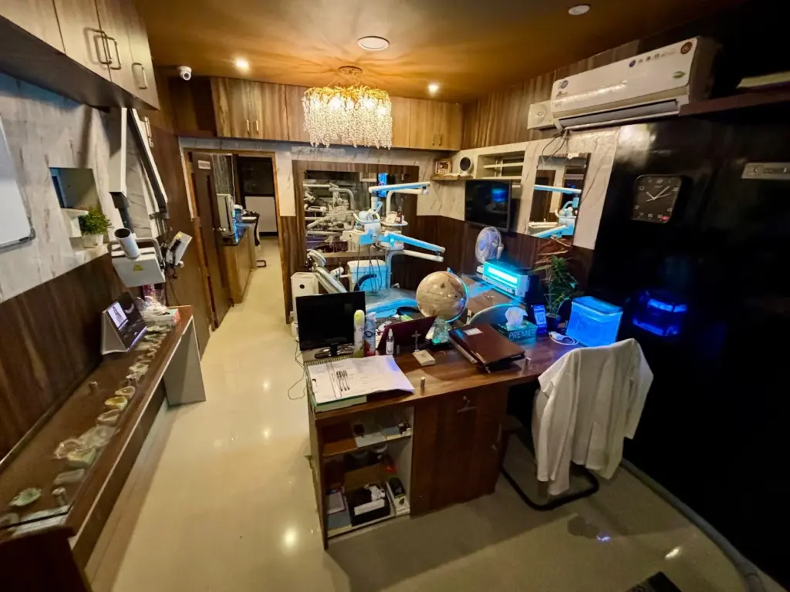

DR. JOHNY’S · PALAKKAD
Your smile.
Our personal
commitment.
General, cosmetic and restorative dentistry at Dr. Johny’s Multi-Speciality Dental Care Centre. Find us at Palat Junction, Palakkad.
- Mon–Sat
- 9 AM–8 PM
- Sunday
- By appointment

Dr. Johny Silvester
B.D.S. · Owner, Dr. Johny’s Dental Clinic
A more personal introductionMEET THE DOCTOR
Dr. Johny
Silvester.
B.D.S. · Owner, Dr. Johny’s Dental Clinic
Have a question about your smile? Start with a conversation about your concerns and the care you’re looking for.
Get to know the clinic01 / CARE FOR YOUR SMILE
What brings
you in today?
Whatever brings you through our doors,
let’s find the right next step together.
02 / A MORE PERSONAL APPROACH
Meet Dr. Johny.
Start a conversation.
Dr. Johny Silvester, B.D.S., is the owner of Dr. Johny’s Dental Clinic. Bring your questions, describe what’s bothering you, and discuss your next step with the clinic.
Space to ask. Time to understand.
Start with a conversation about your concerns and explore your choices with the team.
Care that looks at the whole picture.
General, cosmetic and restorative dentistry, with a broad range of treatments in one place.
A considered way forward.
Discuss your treatment plan, costs and next steps before making a decision.
03 / PATIENT PERSPECTIVES
The little things.
Remembered.
In their own words.
“They take the time to explain everything to us”
“their genuine care over profit”
“explained everything clearly”

INSIDE DR. JOHNY’S CLINICYOUR VISIT, A LITTLE MORE FAMILIAR
Right here.
In Palakkad.
Find the clinic at Akshaya Complex, Palat Junction, West Fort Road. Call ahead to arrange your visit or ask a question before you arrive.
Plan your route Clinic photograph from the current website.A LITTLE REASSURANCE
Before you
say hello.
A few things you might
like to know.
04 / YOUR NEXT VISIT
Let’s make room
for your smile.
A check-up. A question. A fresh start.
We’re just a conversation away.
Find us in Palakkad
Dr. Johny’s Multi-Speciality Dental Care Centre18/373(18), Akshaya Complex, Palat Junction,
West Fort Road, Maidan, Palakkad,
Kerala 678001Get directions
Opening hours
- Monday–Saturday
- 9:00 AM–8:00 PM
- Sunday
- By appointment
Please call to confirm availability.